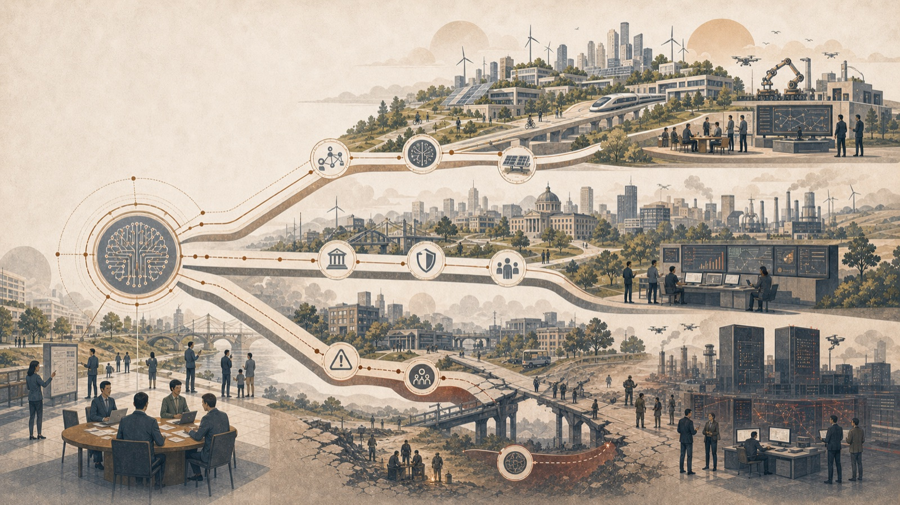

Three scenarios — Acceleration, Friction and Divergence — year by year from today to 2040. Not forecasts and not value judgements, but consistent stories of how today's uncertainties may combine. Based on the report Sweden's AI Transition (May 2026).

The framework rests on three symmetrically constructed scenarios — Acceleration, Friction and Divergence — each tested against the same seven variables (capability curve, adoption rate, investment durability, energy and data centres, geopolitical concentration, Swedish response and EU coordination). They should not be read as value judgements or as a guess about which future “wins”, but as three tests of the same reform package: a reform that works in only one scenario is too fragile.
The timeline projects each scenario's trajectory 2026–2040 from the report's logic and documented signals. The analysis distinguishes the documented (established measurements and expert assessments) from the forecast (a guess about outcomes) — and does not try to predict which outcome occurs, but to build readiness that holds across several possible courses. The May addendum adds an eighth variable, the capacity threshold (Hassabis, Hinton, Legg), and rapid sequencing as a readiness track for early threshold passage.
All data points and positions derive from published sources — including SCB, Epoch AI, OECD, IEA, McKinsey and the IMF. The basis is the report Sweden’s AI Transition (May 2026) and is revised as the source base ages. See Sources.